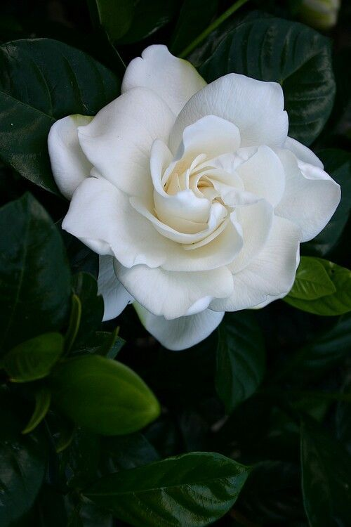
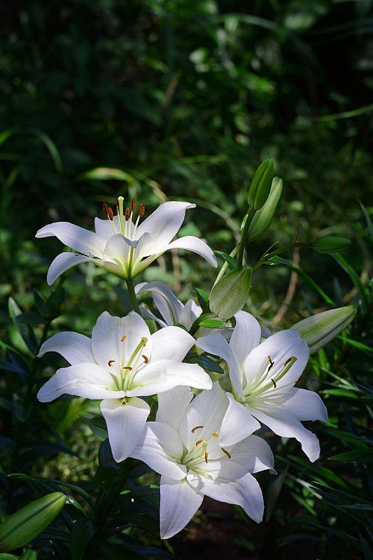
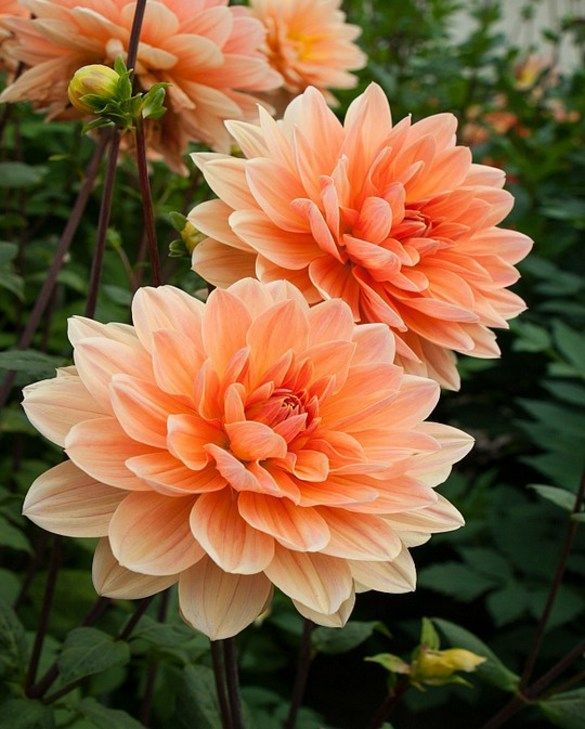
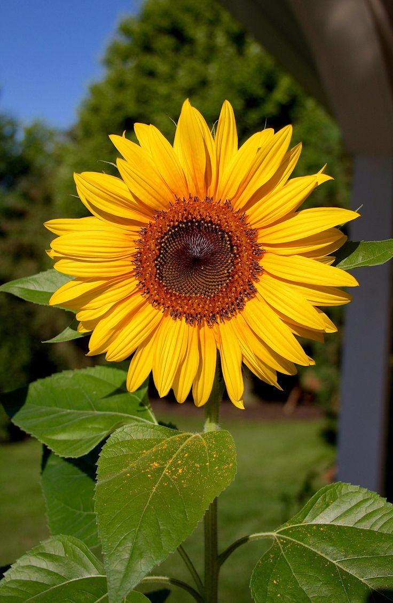
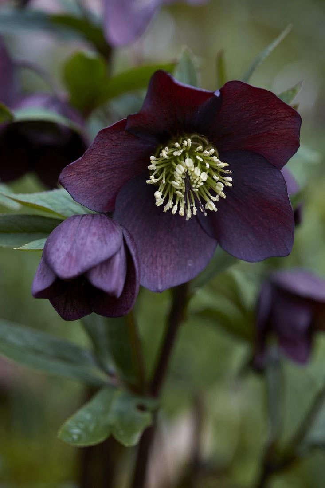
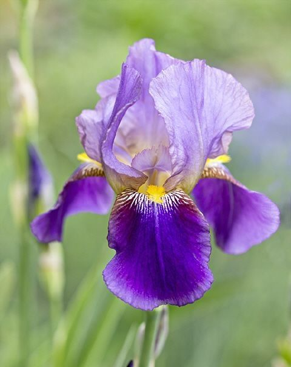
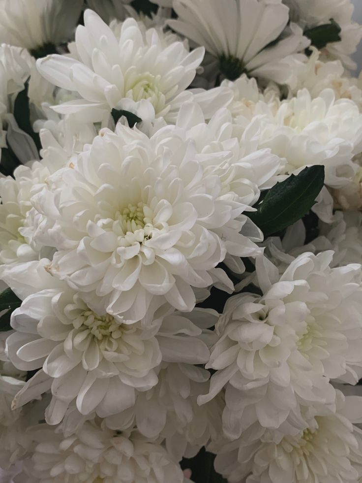

Selamat datang di Floral Symphony! Aku percaya bahwa bunga memiliki kekuatan untuk menginspirasi dan membawa kebahagiaan. Floral Symphony dibuat dengan tujuan untuk memberikan pengetahuan yang mendalam tentang berbagai jenis bunga, cara merawatnya, dan cara menanam dari setiap bunga. Kami ingin menjadi sumber informasi bagi semua orang, dari pemula hingga penggemar berat, agar mereka dapat lebih memahami keindahan dan keanekaragaman flora. Dengan membagikan artikel, tips, dan panduan, kami berharap dapat membangkitkan kecintaan terhadap dunia bunga dan mendorong lebih banyak orang untuk menikmati keajaiban alam di sekitar kita. Bergabunglah bersama kami dalam perjalanan ini dan temukan harmoni dalam setiap bunga!

Gardenia, (genus Gardenia), genus yang terdiri dari lebih dari 140 spesies semak dan pohon dalam keluarga madder (Rubiaceae), berasal dari Afrika tropis dan subtropis, Asia, dan pulau-pulau Pasifik. Melati tanjung (Gardenia jasminoides), yang berasal dari Cina, adalah spesies harum yang dijual oleh toko bunga dan ditanam sebagai tanaman hias. Gardenia memiliki daun cemara mengkilap yang biasanya tersusun secara berlawanan atau melingkar. Bunga berbentuk tabung berwarna putih atau kuning dan ditanggung secara tunggal atau dalam kelompok kecil; bunganya sering kali beraroma kuat. Buahnya yang besar seperti buah beri mengandung daging buah berwarna oranye yang lengket.
Cara merawat: Tumbuhkan gerdenias di tempat yang terkena sinar matahari penuh hingga sebagian teduh, terlindung dari teriknya sinar matahari siang dan embun beku. Gardenia membutuhkan tanah yang subur, lembab dan sedikit asam untuk tumbuh subur. Pemberian makan secara teratur dengan pupuk yang sesuai untuk kacapiring akan membuat bunganya tetap mekar dan dedaunannya tetap hijau dan berkilau. Gardenia akan dengan senang hati tumbuh di dalam pot, cukup gunakan campuran pot yang cocok untuk gardenia seperti Scotts Osmocote Rose, Gardenia, Azalea dan Camellia Mix dan pilihlah pot dengan drainase yang baik, tetapi ingatlah untuk menyiram secara teratur karena gardenia tidak menyukai kekeringan. Buang bunga yang sudah tidak terpakai dan pangkas ujungnya di musim dingin untuk mendorong pertumbuhan baru yang lebat.
Lily
Lily, (genus Lilium), genus dari 80 hingga 100 spesies tanaman berbunga herba dari keluarga Liliaceae, berasal dari daerah beriklim sedang di Belahan Bumi Utara. Banyak bunga lili dihargai sebagai tanaman hias, dan telah banyak dihibridisasi. Kata lili juga digunakan dalam nama umum banyak tanaman dari genera lain yang menyerupai bunga lili. Ini termasuk daylily (Hemerocallis) dan berbagai spesies dari keluarga Amaryllidaceae.
Cara merawat: Oleskan mulsa setebal 5-7,5 cm (2-3 inci) di atas tanah setelah penanaman, dan tambahkan setiap tahun. Tanaman lily luar ruangan yang tumbuh di tanah mungkin tidak perlu disiram sama sekali, tetapi periksalah selama musim kemarau yang berkepanjangan di musim panas. Tanaman yang berada di dalam wadah perlu disiram secara teratur kapan pun diperlukan pada musim semi dan musim panas. Beri makan dengan pakan pelepas lambat atau terkontrol di musim semi dan berikan pakan cair selama musim tanam - terutama saat mereka berbunga. Meskipun sebagian besar bunga lili menghasilkan batang yang kokoh yang dapat mentolerir angin kencang, sebaiknya pancanglah bunga lili yang tumbuh lebih tinggi dari 90 cm (3 kaki) di mana pun angin menjadi masalah. Ketika bunga telah memudar, buanglah dan kembangkan polong bijinya. Jaga agar tanaman tetap tumbuh dengan kuat setelah selesai berbunga. Jangan membuang batang bunga dan dedaunan sampai mereka layu di musim gugur, ketika mereka harus ditebang ke permukaan tanah. Setelah beberapa tahun tumbuh di tempat yang sama, angkat dan pisahkan umbi dan pisahkan umbi muda.
Dahlia
Dahlia, (genus Dahlia), genus dari sekitar 40 spesies tanaman berbunga dalam keluarga aster (Asteraceae), berasal dari dataran tinggi Meksiko dan Amerika Tengah. Sekitar enam spesies dalam genus Dahlia telah dibiakkan untuk dibudidayakan sebagai bunga hias dan populer di industri bunga dan taman. Ribuan kultivar dahlia dikelompokkan ke dalam berbagai jenis, termasuk dahlia tunggal, ganda, pompon, kaktus, teratai, bunga peony, dan dahlia piring makan. Dahlia adalah tanaman tahunan berbonggol, dan sebagian besar memiliki daun sederhana yang tersegmentasi dan bergigi atau dipotong. Bunga majemuknya bisa berwarna putih, kuning, merah, atau ungu. Dahlia tumbuh dengan baik di sebagian besar tanah kebun. Mereka mulai berbunga di akhir musim panas dan terus berbunga sampai terganggu oleh embun beku di musim gugur.
Cara merawat: Setelah tanaman mencapai tinggi sekitar 20 cm, dorong lebih banyak tunas samping yang berbunga dengan mencubit ujung utama yang tumbuh. Buang tunas utama (di tengah tanaman, tumbuh tegak) hingga ke sepasang daun teratas, dengan menggunakan pisau tajam atau ibu jari dan telunjuk Anda. Ikat pertumbuhan baru ke tiang pancang setiap minggu atau lebih. Dua minggu sekali, beri makan dahlia Anda dengan makanan yang mengandung kalium tinggi, seperti makanan tomat. Hal ini akan membuat bunganya terus bermekaran. Siram dengan baik seminggu sekali. Memenggal kepala dahlia sangat penting untuk memperpanjang pembungaan. Perbedaan antara kuncup dan kepala bunga yang sudah tidak terpakai dapat membingungkan - kuncup berbentuk bulat, sedangkan kepala bunga yang sudah tidak terpakai lebih runcing. Buang seluruh batang yang berbunga.
Bunga Matahari
Bunga Matahari, (genus Helianthus), genus dari hampir 70 spesies tanaman herba keluarga aster (Asteraceae). Bunga matahari berasal dari Amerika Utara dan Selatan, dan beberapa spesies dibudidayakan sebagai tanaman hias karena ukurannya yang spektakuler dan bunganya yang besar serta bijinya yang dapat dimakan. Artichoke Yerusalem (Helianthus tuberosus) dibudidayakan untuk diambil umbi bawah tanahnya yang dapat dimakan. Bunga matahari umum (H. annuus) adalah ramuan tahunan dengan batang berbulu kasar setinggi 1-4,5 meter (3-15 kaki) dan lebar, bergigi kasar, daun kasar sepanjang 7,5-30 cm (3-12 inci) yang tersusun secara spiral.
Cara merawat: Dukung bunga matahari yang tinggi dengan tiang pancang saat mereka tumbuh. Setelah bunga muncul, beri makan bunga matahari setiap minggu dengan pakan kalium tinggi (pakan tomat sangat ideal). Siram secara teratur selama musim kemarau, terutama varietas yang tinggi, karena sulit bagi mereka untuk pulih jika dibiarkan mengering dan layu. Setelah bunganya mekar, biarkan bagian kepalanya tetap berada di atas tanaman untuk burung-burung - burung kutilang dan burung pipit menyukainya. Pada akhir musim gugur, cabut tanaman dan buatlah kompos.
Hellebore
Hellebore adalah tanaman klasik untuk musim dingin, dengan mekar yang elegan dan mengangguk-angguk dalam nuansa hijau, putih, merah muda atau merah delima. Tanaman keras ini memiliki periode berbunga yang panjang, yang berlangsung hingga musim semi. Terutama hijau dengan daun yang indah, mereka tumbuh subur di tempat yang teduh. Kebanyakan hellebore berukuran kompak, setinggi 30-45cm (12-18in), tetapi jenis yang lebih berani, seperti Helleborus argutifolius dan H. foetidus, dapat tumbuh hingga 90cm (3ft). Meskipun mereka lebih menyukai tempat teduh, mereka akan sering bertahan di tempat yang lebih cerah selama tanahnya tidak terlalu kering. Hellebore yang berbau busuk (Helleborus foetidus) senang di tempat teduh.
Cara merawat: Pada akhir musim dingin atau awal musim semi, saat tangkai pertumbuhan baru muncul, dedaunan tua atau rusak dapat dicukur kembali ke pangkalnya. Pemberian pupuk kandang atau kompos setiap tahun akan membantu meningkatkan pertumbuhan hellebore Anda. Sediakan banyak air selama musim semi dan musim gugur saat mereka tumbuh secara aktif. Anda dapat bersantai selama musim panas karena panas menyebabkan hellebore tidak aktif.
Iris
Iris, (genus Iris), genus dari sekitar 300 spesies tanaman berbunga, termasuk beberapa bunga taman yang paling populer dan beragam di dunia. Keragaman genus ini berpusat di zona beriklim utara, meskipun beberapa spesiesnya yang paling indah berasal dari daerah Mediterania dan Asia Tengah. Bunga iris adalah (bisa dibilang) fleur-de-lis dari standar kerajaan Prancis. Bunga ini merupakan subjek populer dalam rangkaian bunga Jepang dan merupakan bunga potong yang penting secara ekonomi dalam industri bunga. Bunga ini juga merupakan sumber orrisroot, yang menjadi bahan dasar pembuatan parfum “esensi violet”.
Cara merawat: Biarkan daun-daun bunga iris mati secara alami sehingga bohlam dapat membangun energi untuk tahun depan. Pastikan umbi iris tidak terlalu basah, terutama di musim dingin, yang dapat menyebabkan pembusukan. Iris berjenggot berumur panjang tetapi pembungaannya menurun setelah rumpunnya menjadi lebih tua dan padat. Peremajaan mereka dengan membagi dan menanam kembali bagian luar rumpun yang lebih muda di akhir musim panas, membuang bagian akar yang lebih tua. Bagilah rumpun besar iris yang menyukai kelembapan di akhir musim panas.
Krisan
Krisan, (genus Chrysanthemum), genus dari sekitar 40 spesies tanaman berbunga dalam keluarga aster (Asteraceae), berasal dari daerah subtropis dan beriklim sedang di Dunia Lama. Bunga krisan sangat umum ditemukan di Asia Timur, di mana bunga ini sering digambarkan dalam karya seni, dan banyak yang menjadi tanaman hias yang populer. Setiap bunga memiliki karakteristik unik dan makna yang kaya, menjadikannya istimewa dalam berbagai konteks budaya dan estetika.
Cara merawat: Untuk menghasilkan tanaman yang lebih lebat dengan lebih banyak bunga, saat tingginya 20-25cm (8-10in) pada akhir Mei hingga pertengahan Juni, cabutlah bagian atas 5cm (2in) dari tunas utama. Saat kuncup bunga berkembang dan mulai terbuka, mulailah memberi makan dengan makanan tanaman kalium tinggi. Tanaman yang tinggi, dan tanaman yang tumbuh dalam posisi berangin, perlu dipancang. Anda dapat mengikat batang individu dari varietas berbunga besar satu per satu ke tongkat bambu. Untuk varietas yang lebih kecil dan lebih lebat, gunakan cincin penyangga dari plastik atau logam untuk membantu menyatukan seluruh tanaman. Pemangkasan secara teratur akan membantu memastikan pembungaan yang berkelanjutan dan tampilan yang tahan lama.
Sumber: Britaninica, RHS, Lovethegraden, Gardenersworld
Gardenia
Lily
Dahlia
Bunga Matahari
Hellebore
Iris
Krisan